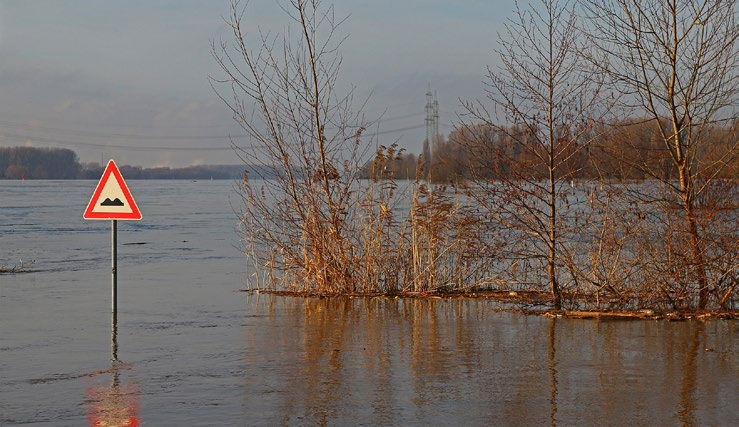
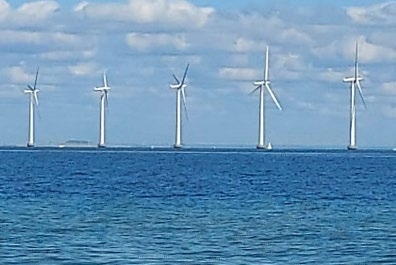
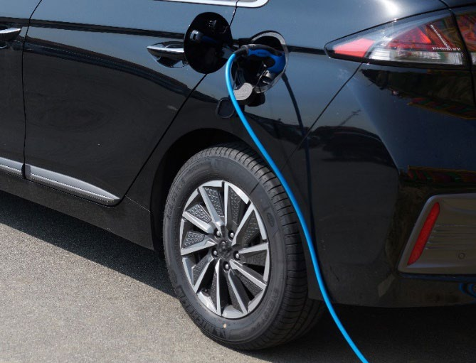
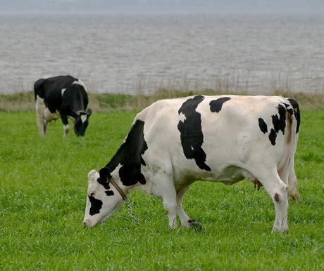

6.17 – KLIMA
sidde 242
Global Opvarmning – Et Globalt Problem
Forbrug af store mængder energi – i form af afbrænding af kul, olie og gas (samlet kaldet fossile brændsler) – inden for blandt andet produktion og trans port har været helt afgørende for at skabe de seneste 150 års store økonomiske vækst. Men det har også ført til en stor udledning af CO2 og andre såkaldte driv husgasser i atmosfæren. Man taler om drivhusgasser og ”drivhuseffekten”, fordi disse gasser – ligesom et drivhus – på den ene side lukker solens stråler ind, men på den anden side begrænser varmen i at slippe ud igen. Jo flere driv husgasser, der er i atmosfæren, desto mindre varme lukkes ud af atmosfæren igen. Det påvirker klimaet, så der sker en global opvarmning, som truer med på verdensplan at skabe flere områder dækket af ørken, flere oversvømmelser og mere ekstrem varme. Konsekvensen vil blive, at mennesker får sværere ved at leve i store dele af verden.Oversvømmelse af floden Rhinen i Tyskland. Foto: A.
Oversvømmelse af floden Rhinen i Tyskland. Foto: A. Savin.
Det er mere end 100 år siden, at man opdagede denne drivhuseffekt. Dengang troede man, det ville tage tusinder af år, før det blev et problem. Men det kom til at gå meget hurtigere. Nu ved man, at udledningen af CO2 og andre drivhus gasser allerede har påvirket vores klima. I sammenligning med perioden 18501900 er det globale klima blevet mere end én grad varmere. Historisk er det en stor ændring på lidt over 100 år. Særligt de seneste årtier er det gået stærkt, og udviklingen ser ud til at fortsætte endnu hurtigere. FN forudser, at klimaet vil blive 2,3 til 2,5 grader varmere i slutningen af dette århundrede, end det var i perioden 1850-1900. For at Danmark kan bidrage til at modvirke denne udvik ling, er der de sidste årtier taget en række skridt, der skal reducere danskernes udslip af drivhusgasser.
Læremateriale Til Indfødsretsprøven

sidde 243
Det har betydet, at Danmarks udledning siden 1990 er faldet med cirka 47 procent. Men globalt er udledningen af drivhusgasser steget meget i samme periode – for Jordens befolkning vokser hurtigt, og flere får penge til at købe mere. Det kræver mere produktion, og dermed lukkes flere drivhusgasser ud i atmosfæren.
Danmark udleder cirka en tusindedel (1/1000) af verdens klimagasser. Problemet kan derfor kun løses, hvis andre lande også reducerer deres udslip. Derfor er internationalt samarbejde afgørende. Verdens lande har – ikke mindst i FN – haft fokus på at løse problemet. Der er indgået en række internationale aftaler, herunder den såkaldte Paris-aftale i 2015, som forpligter næsten alle verdens lande til at bidrage til at reducere det globale udslip af drivhusgasser over de kommende årtier. Desuden har man aftaler inden for EU med højere ambitioner end Paris-aftalen.
Den Danske Klimaindsats
De sidste år har klima haft meget plads på den politiske dagsorden i Danmark. Meningsmålinger viser, at emnet har været vigtigt for mange vælgere, og der har været afviklet flere store demonstrationer for at lægge pres på politikerne for at gøre mere for at beskytte klimaet. I 2014 blev Klimarådet oprettet. Det skal rådgive regeringen i klimaspørgsmål, vurdere regeringens klimapolitik og fremlægge egne anbefalinger. Klimarådet skal i sin rådgivning blandt andet have fokus på, at udledningen af drivhusgasser reduceres på en måde, så det ikke koster borgerne, virksomhederne og samfundet for mange penge og arbejds pladser.
I 2019 blev de fleste politiske partier enige om en ny klimalov. Klimaloven forpligter regeringen til frem til 2030 at reducere Danmarks udledning af driv husgasser med 70 procent sammenlignet med 1990. Derudover forpligter klimaloven også til at sikre fuld klimaneutralitet for Danmark i 2050. Det vil sige, at Danmark ikke må udlede flere drivhusgasser, end landet optager. Siden klimaloven blev vedtaget, har Folketinget og regeringen aftalt en række tiltag, der skal tjene til at nå målene.
Vejen til at nå disse mål skal gå via den såkaldte ”grønne” omstilling. Den grønne omstilling handler om at gå bort fra at benytte sig af ”sorte” energikilder som olie og gas, der udleder mange drivhusgasser, og gå over til at bruge vedvarende og grønne energikilder som for eksempel sol, vind og vandkraft. Disse energikilder kaldes vedvarende, fordi de ikke slipper op, og de er grønne, fordi de udleder ingen eller langt færre drivhusgasser end de sorte energikilder. Og udviklingen går den rigtige vej, selv om der er lang vej endnu. I 2024 var cirka 50 procent af Danmarks energiforbrug dækket af vedvarende energi mod seks procent i 1990.Vindemøllepark i Øresund. Foto: Tue Schou Pedersen.
Vindemøllepark i Øresund. Foto: Tue Schou Pedersen.
Læremateriale Til Indfødsretsprøven

sidde 244
Af de vedvarende energikilder er ikke mindst vindenergi vigtig i Danmark, som har haft vindmøller på land siden 1970’erne og i 1991 opstillede verdens første havvindmøllepark, Vindeby, ud for Lolland. I 2025 producerede vindmøller 52 procent af Danmarks elforbrug.
Danmark har siden 2020 taget et væsentligt skridt i forhold til at udbygge vind energien yderligere. Som det første land i verden har Danmark besluttet at bygge en såkaldte energi-ø, som skal opføres i midt 2030'erne. Energi-øen skal ligge ved Bornholm og skal sende strøm til både Sjælland og Tyskland. Det skal give strøm til mange millioner mennesker i forskellige europæiske lande. I maj 2025 besluttede man i Danmark at udbyde mindst 2,8 GW havvind – fordelt på tre forskellige havvindmølleparker, to i Nordsøen og én i indre danske farvande ved Hesselø i Kattegat. Havvindmølleparkerne vil samlet kunne levere grøn strøm til knap tre millioner husstande.
Der arbejdes også på dels en mere effektiv opvarmning af huse, lejligheder med mere og dels, at det er grøn energi, der benyttes til denne opvarmning. Der er løbende stillet større krav til isolering af bygninger med videre for at spare på energiforbruget, og der ydes offentlig støtte til, at boligejere kan få udskiftet deres olie- eller gasfyr med varmepumper eller med fjernvarme. Varmepumper bruger varme fra eksempelvis jord og luft og hæver temperaturen med elek tricitet, mens fjernvarme er baseret på centrale varmeanlæg, der anvender fx biomasse eller større varmepumper.
Desuden er bilafgifterne blevet indrettet efter, hvor meget bilerne udleder af drivhusgasser. Det er et mål, at der skal være mange flere biler, som kører på elektricitet (elbiler) frem for biler, der kører på benzin eller diesel.
Tidligere købte Europa meget olie og gas fra Rusland. Importen er dog reduceret betydeligt siden Ruslands angreb på Ukraine i 2022, samtidig med at interessen for grøn energi er vokset yderligere, fordi den kan gøre Europa mere uafhængig af russisk energi.
Danmark er blandt andet sammen med flere Nordsølande (Holland, Belgien, Tyskland, Storbritannien, Norge m.fl.) blevet enige om, at der frem mod 2050 skal bygges rigtig mange nye vindmøller i Nordsøområdet.Opladning af el-bil.
Opladning af el-bil.
Læremateriale Til Indfødsretsprøven

sidde 245
Grøn Trepart
En del af udslippet af drivhusgasser kommer også fra landbruget, som udgør 60 procent af Danmarks areal. Det gør Danmark til et af de lande i verden, hvor den største andel af jorden er opdyrket landbrugsjord. Omstilling af landbruget har således også afgørende betydning for Danmarks klimaindsats.
Derfor har regeringen, kommunerne og en række erhvervsorganisationer, fagfor eninger og miljøorganisationer indgået et samarbejde ved navn "Den Grønne Trepart". Parterne bag Den Grønne Trepart aftalte i 2024 en stor og samlet plan for at skabe mere natur i Danmark samt renere vand i søer, åer og i havet. Og for at omstille landbruget, så det forurener mindre.
Det er aftalt, at cirka 15 procent af Danmarks landbrugsjord, svarende til et areal, som er større end Fyn og Bornholm tilsammen, skal omlægges til natur, ved at der plantes ny skov, etableres nye enge og andre naturområder. I den forbin delse har det stor betydning, at såkaldt 'lav-bunds-jord' bliver omlagt til natur. Lavbundsjord er landbrugsjord, der 'ligger lavt' i fugtige, sumpede områder, fyldt med døde plante-rester, som indeholder en masse kulstof, der frigives når jorden dyrkes. Lavbunds-jord udgør således kun syv procent af Danmarks land brugsjord men er årsag til cirka halvdelen af CO2-udledningen fra landbruget.
Danmarks kystområder og fjorde har flere steder været ramt af ilt-svind, det vil sige faldende mængder af ilt, som gør det sværere for fisk og anden natur at leve i vandet. Dette ilt-svind skyldes ikke mindst landbrugets gødning af markerne. Aftalen sigter derfor særligt mod at omlægge de landbrugsarealer, som udleder kvælstof til sårbare vandområder.
Desuden indebærer aftalen, at Danmark som det første land i verden har valgt at indføre en direkte afgift på landbrugets udledning af CO2 – den såkaldte "CO2afgift" – så landmænd skal betale for udledning af CO2 fra især deres køer, svin,
får, høns og øvrige dyr. Afgiften har skabt politisk diskussion og har blandt andet været kritiseret for at flytte fødevareproduk tion og arbejdspladser ud af landdistrikterne og ud af Danmark. Andre har kriti seret afgiften for at være for lav til at kunne redu cere udledningen af CO2 tilstrækkeligt.Køer på mark i Danmark. Fot
Køer på mark i Danmark. Foto: Malene Thyssen.
Læremateriale Til Indfødsretsprøven

sidde 246
www.integrationsviden.dk
Fonte: Læremateriale til Indfødsretsprøven, SIRI.